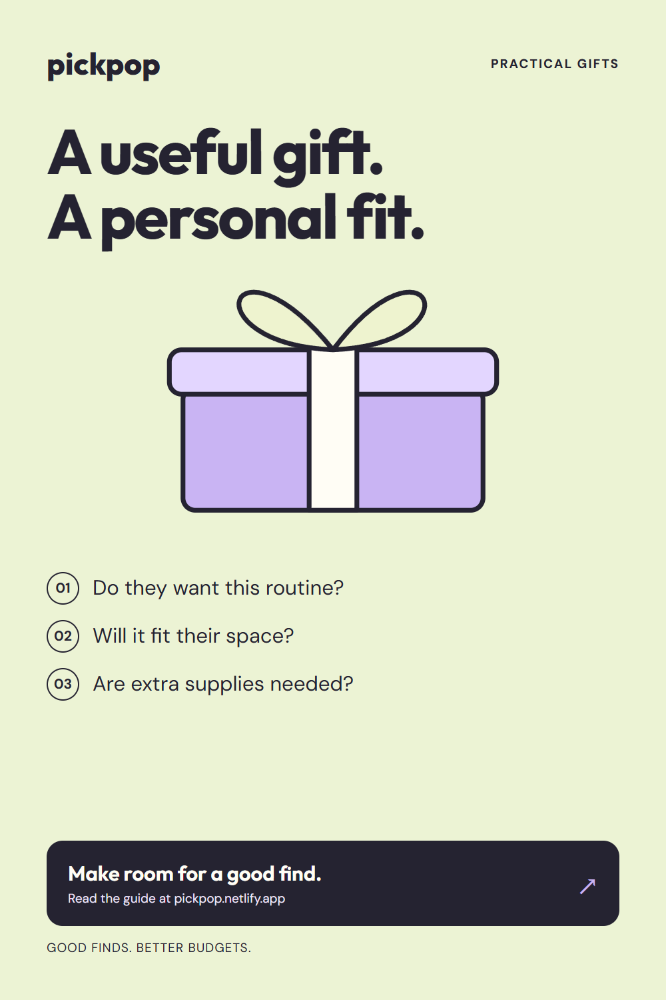
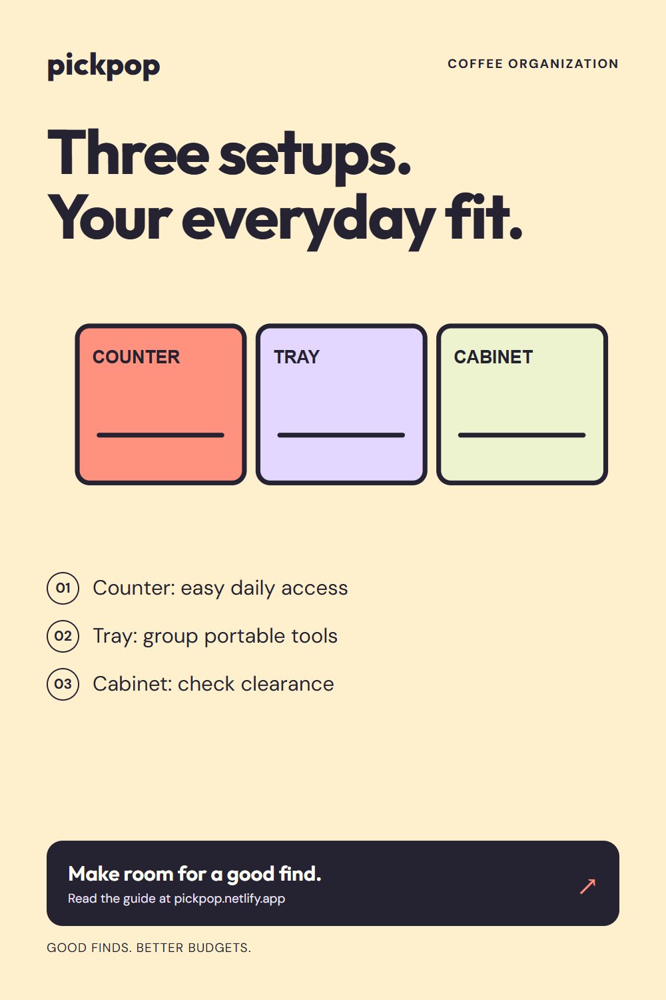

Autorização recebida em13/10/2026. Nenhum novo agendamento/publicação confirmado. Antes de executar: conferir duplicatas, espaço na fila oficial e fuso. Datas abaixo são propostas após a primeira rodada, um novo Pin por dia.

pin-11 · Practical gifts for home lovers: ask three questions
Proposta: 2026-10-22 às18:00; fuso não confirmado.
Pasta: Everyday Kitchen Essentials
A practical gift starts with the recipient. Would they enjoy the routine? Will it fit their space? Does it need extra supplies? Use the PickPop home-lover gift guide to compare thoughtful options without guessing their preferences. This PickPop page contains Amazon affiliate links. PickPop may earn a commission from qualifying purchases.
Destino publicado
pin-12 · Counter, tray, or cabinet? Plan your coffee station
Proposta: 2026-10-23 às18:00; fuso não confirmado.
Pasta: Coffee Station Ideas
Counter, tray, or cabinet: which coffee-station layout fits your routine? Compare daily access, portable grouping, and cabinet clearance. Read the PickPop guide to plan a setup that leaves useful room in your kitchen. This PickPop page contains Amazon affiliate links. PickPop may earn a commission from qualifying purchases.
Destino publicado
pin-13 · Coffee makers for small apartments: one cup or a shared pot?
Proposta: 2026-10-24 às18:00; fuso não confirmado.
Pasta: Coffee Station Ideas
Compare a small manual coffee routine with a shared pour-over setup. PickPop explains supporting gear, space, and cleanup, with source-reviewed CHEMEX and AeroPress options. Capacity is not a promise of your finished drink size. Read the guide before choosing. This PickPop guide contains Amazon affiliate links. PickPop may earn a commission from qualifying purchases.
Destino publicado
pin-14 · Coffee station essentials: a grinder is not a brewer
Proposta: 2026-10-25 às18:00; fuso não confirmado.
Pasta: Coffee Station Ideas
Planning a coffee station? A Baratza Encore grinder and a CHEMEX brewer do different jobs. Use PickPop’s guide to compare your routine, supporting supplies, and cleanup space. You may already have part of the setup; buy for a missing task, not a matching look. This PickPop guide contains Amazon affiliate links. PickPop may earn a commission from qualifying purchases.
Destino publicado
pin-15 · Small-space kitchen tools: start with the meals you cook
Proposta: 2026-10-26 às18:00; fuso não confirmado.
Pasta: Everyday Kitchen Essentials
Before adding kitchen tools to a small apartment, list the prep tasks you actually repeat. PickPop’s guide discusses useful tools, including a source-reviewed Victorinox Fibrox chef’s knife, with size and storage considerations. A full-size knife will not suit every space or user. This PickPop guide contains Amazon affiliate links. PickPop may earn a commission from qualifying purchases.
Destino publicado
pin-16 · Before buying a cabinet organizer, check these three spaces
Proposta: 2026-10-27 às18:00; fuso não confirmado.
Pasta: Small Kitchen Organization
A cabinet organizer can fit inside and still be awkward to reach. Measure shelf depth, clearance, and the door opening before comparing a bin, shelf insert, or turntable. PickPop’s practical cabinet guide helps you try the layout first and buy for a specific access problem. This PickPop guide contains Amazon affiliate links. PickPop may earn a commission from qualifying purchases.
Destino publicado